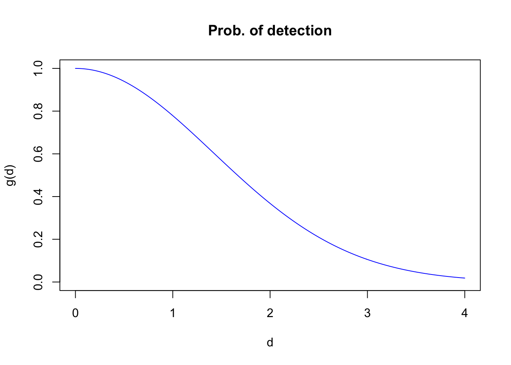
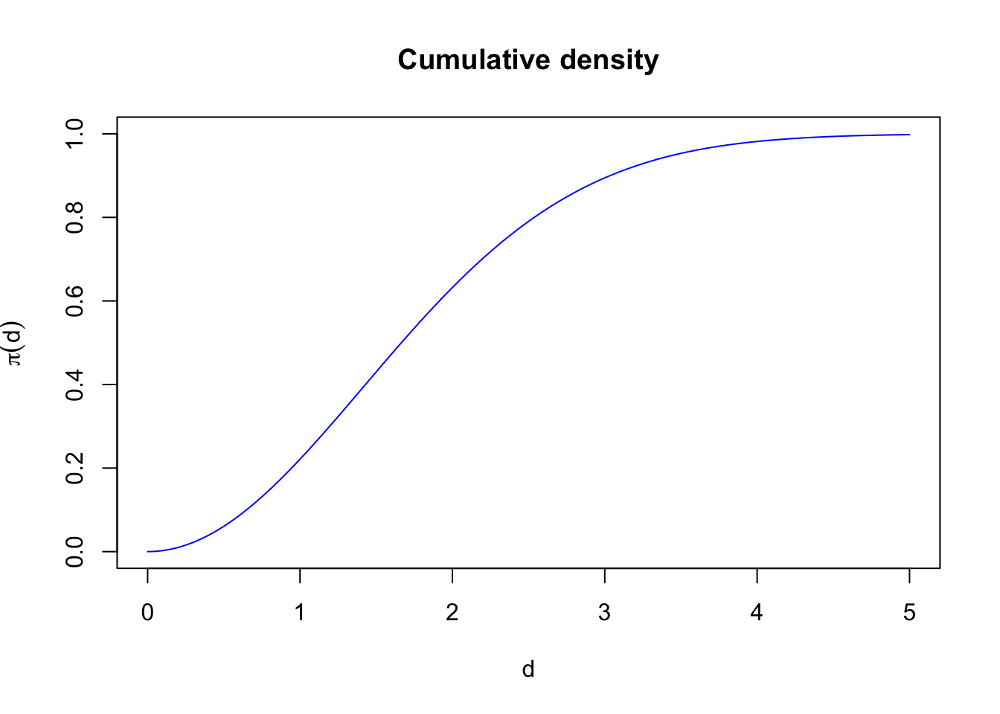
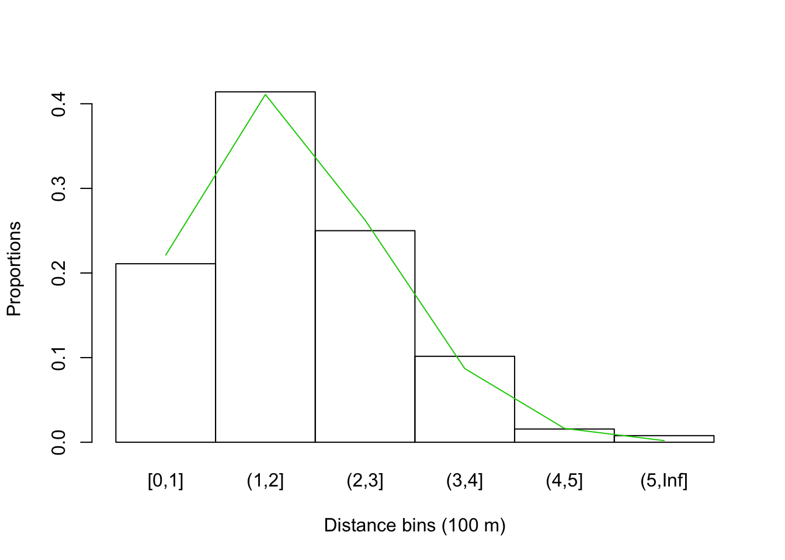
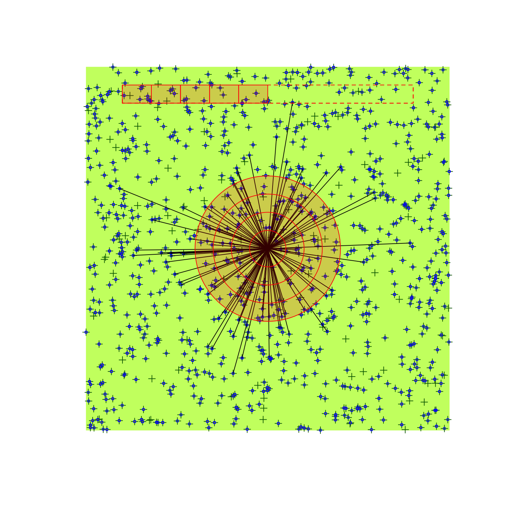

Chapter 5 The Detection Process
5.1 Introduction
As part of the detection process, a skilled observer counts individual birds at a count station. New individuals are assigned to time and distance categories, the type of behavior also registered. During this process, auditory cues travel through the distance between the bird and the observer. As the pover of the sound fades away, the chanches of being detected also decreases. If the detection process is based on visual detections, vegetation can block line of sight, etc. In this chapter, we scrutinize how this detection process contributes to the factor \(C\).
5.2 Prerequisites
library(bSims) # simulations
library(detect) # multinomial models
library(Distance) # distance sampling
load("_data/josm/josm.rda") # JOSM data
source("functions.R") # some useful stuff5.3 Distance functions
The distance function (\(g(d)\) describes the probability of detecting an individual given the distance between the observer and the individual (\(d\)). The detection itself is often triggered by visual or auditory cues, and thus depend on the individuals being available for detection (and of course being present in the survey area).
Distance functions have some characteristics:
- It is a monotonic decreasing function of distance,
- \(g(0)=1\): detection at 0 distance is perfect.
Here are some common distance function and rationale for their use (i.e. mechanisms leading to such distance shapes):
- Negative Exponential: a one-parameter function (\(g(d) = e^{-d/\tau}\)), probability quickly decreases with distance, this mirrors sound attenuation under spherical spreading, so might be a suitable form for acoustic recoding devices (we will revisit this later), but not a very useful form for human based counts, as explained below;
- Half-Normal: this is also a one-parameter function (\(g(d) = e^{-(d/\tau)^2}\)) where probability initially remain high (the shoulder), reflecting an increased chance of detecting individuals closer to the observer, this form has also sone practical advantages that we will discuss shortly (\(\tau^2\) is variance of the unfolded Normal distribution, \(\tau^2/2\) is the variance of the Half-Normal distribution – both the Negative Exponential and the Half-Normal being special cases of \(g(d) = e^{-(d/\tau)^b}\) that have the parameter \(b\) [\(b > 0\)] affecting the shoulder);
- Hazard rate: this is a two-parameter model (\(g(d) = 1-e^{-(d/\tau)^-b}\)) that have the parameter \(b\) (\(b > 0\)) affecting the more pronounced and sharp shoulder.
d <- seq(0, 2, 0.01)
plot(d, exp(-d/0.8), type="l", col=4, ylim=c(0,1),
xlab="Distance (100 m)", ylab="P(detection)", main="Negative Exponential")
plot(d, exp(-(d/0.8)^2), type="l", col=4, ylim=c(0,1),
xlab="Distance (100 m)", ylab="P(detection)", main="Half-Normal")
plot(d, 1-exp(-(d/0.8)^-4), type="l", col=4, ylim=c(0,1),
xlab="Distance (100 m)", ylab="P(detection)", main="Hazard rate")
Exercise
Try different values of \(b\) to explore the different shapes of the Hazard rate function.
Write your own code (plot(d, exp(-(d/<tau>)^<b>), type="l", ylim=c(0,1))), or run shiny::runApp("_shiny/distancefun.R").
We will apply this new found knowledge to our bSims world:
the observer is in the middle of the landscape, and each vocalization
event is aither detected or not, depending on the distance.
Units of tau are given on 100 m units, so that corresponding
density estimates will refer to ha as the unit area.
In this example, we want all individuals to be equally available,
so we are going to override all behavioral aspects of the simulations
by the initial_location argument when calling bsims_animate.
We set density and tau high enough to detections in this example.
tau <- 2
set.seed(123)
l <- bsims_init()
a <- bsims_populate(l, density=10)
b <- bsims_animate(a, initial_location=TRUE)
(o <- bsims_detect(b, tau=tau))## bSims detections
## 1 km x 1 km
## stratification: H
## total abundance: 1013
## no events, duration: 10 min
## detected: 128 seen/heardplot(o)5.4 Distance sampling
The distribution of the observed distances is a product of detectability and the distribution of the individuals with respect to the point where the observer is located. For point counts, area increases linearly with radial distance, implying a triangular distribution with respect to the point (\(h(d)=\pi 2 d /A=\pi 2 d / \pi r_{max}^2=2 d / r_{max}^2\), where \(A\) is a circular survey area with truncation distance \(r_{max}\)). The product \(g(d) h(d)\) gives the density function of the observed distances.
g <- function(d, tau, b=2, hazard=FALSE)
if (hazard)
1-exp(-(d/tau)^-b) else exp(-(d/tau)^b)
h <- function(d, rmax)
2*d/rmax^2rmax <- 4
d <- seq(0, rmax, 0.01)
plot(d, g(d, tau), type="l", col=4, ylim=c(0,1),
xlab="d", ylab="g(d)", main="Prob. of detection")
plot(d, h(d, rmax), type="l", col=4,
xlab="d", ylab="h(d)", main="PDF of distances")
plot(d, g(d, tau) * h(d, rmax), type="l", col=4,
xlab="d", ylab="g(d) h(d)", main="Density of observed distances")
The object da contains the distances to all the nests
based on our bSims object,
we use this to display the distribution of available distances:
da <- sqrt(rowSums(a$nests[,c("x", "y")]^2))
hist(da[da <= rmax], freq=FALSE, xlim=c(0, rmax),
xlab="Available distances (d <= r_max)", main="")
curve(2*x/rmax^2, add=TRUE, col=2)The get_detections function returns a data frame with the
detected events (in our case just the nest locations):
$d is the distance, $a is the angle
(in degrees, counter clock-wise from positive x axis).
head(dt <- get_detections(o))The following code plots the probability density of the observed distances within the truncation distance \(r_{max}\), thus we need to standardize the \(g(r) h(r)\) function by the integral sum:
f <- function(d, tau, b=2, hazard=FALSE, rmax=1)
g(d, tau, b, hazard) * h(d, rmax)
tot <- integrate(f, lower=0, upper=rmax, tau=tau, rmax=rmax)$value
hist(dt$d[dt$d <= rmax], freq=FALSE, xlim=c(0, rmax),
xlab="Observed distances (r <= rmax)", main="")
curve(f(x, tau=tau, rmax=rmax) / tot, add=TRUE, col=2)In case of the Half-Normal, we can linearize the relationship by taking the log of the distance function: \(log(g(d)) =log(e^{-(d/\tau)^2})= -(d / \tau)^2 = x \frac{1}{\tau^2} = 0 + x \beta\). Consequently, we can use GLM to fit a model with \(x = -d^2\) as predictor and no intercept, and estimate \(\hat{\beta}\) and \(\hat{\tau}=\sqrt{1/\hat{\beta}}\).
For this method to work, we need to know the observed and unobserved distances as well, which makes this approach of low utility in practice when location of unobserved individuals is unknown. But we can at least check our bSims data:
dat <- data.frame(
distance=da,
x=-da^2,
detected=ifelse(rownames(o$nests) %in% dt$i, 1, 0))
summary(dat)## distance x detected
## Min. :0.226 Min. :-49.33 Min. :0.000
## 1st Qu.:2.876 1st Qu.:-23.74 1st Qu.:0.000
## Median :3.965 Median :-15.72 Median :0.000
## Mean :3.827 Mean :-16.69 Mean :0.126
## 3rd Qu.:4.872 3rd Qu.: -8.27 3rd Qu.:0.000
## Max. :7.024 Max. : -0.05 Max. :1.000mod <- glm(detected ~ x - 1, data=dat, family=binomial(link="log"))
c(true=tau, estimate=sqrt(1/coef(mod)))## true estimate.x
## 2.000 2.034curve(exp(-(x/sqrt(1/coef(mod)))^2),
xlim=c(0,max(dat$distance)), ylim=c(0,1),
xlab="Distance (100 m)", ylab="P(detection)")
curve(exp(-(x/tau)^2), lty=2, add=TRUE)
rug(dat$distance[dat$detected == 0], side=1, col=4)
rug(dat$distance[dat$detected == 1], side=3, col=2)
legend("topright", bty="n", lty=c(2,1),
legend=c("True", "Estimated"))The Distance package offers various tools to fit
models to observed distance data.
See here for a tutorial.
The following script fits the Half-Normal (key = "hn")
without ajustments (adjustment=NULL) to
observed distance data from truncated point transect.
It estimates \(\sigma = \sqrt{\tau}\):
dd <- ds(dt$d, truncation = rmax, transect="point",
key = "hn", adjustment=NULL)## Fitting half-normal key function## Key only model: not constraining for monotonicity.## AIC= 315.502## No survey area information supplied, only estimating detection function.c(true=tau, estimate=exp(dd$ddf$par)^2)## true estimate
## 2.000 2.1765.5 Average detection
To calculate the average probability of detecting individuals within a circle with truncation distance \(r_{max}\), we need to integrate over the product of \(g(r)\) and \(h(r)\): \(q(r_{max})=\int_{0}^{r_{max}} g(d) h(d) dd\). This gives the volume of pie dough cut at \(r_{max}\), compared to the volume of the cookie cutter (\(\pi r_{max}^2\)).
q <- sapply(d[d > 0], function(z)
integrate(f, lower=0, upper=z, tau=tau, rmax=z)$value)
plot(d, c(1, q), type="l", col=4, ylim=c(0,1),
xlab=expression(r[max]), ylab=expression(q(r[max])),
main="Average prob. of detection")For the Half-Normal detection function, the analytical solution for the average probability is \(\pi \tau^2 [1-exp(-d^2/\tau^2)] / (\pi r_{max}^2)\), where the denominator is a normalizing constant representing the volume of a cylinder of perfect detectability.
To visualize this, here is the pie analogy for \(\tau=2\) and \(r_{max}=2\):
tau <- 2
rmax <- 2
w <- 0.1
m <- 2
plot(0, type="n", xlim=m*c(-rmax, rmax), ylim=c(-w, 1+w),
axes=FALSE, ann=FALSE)
yh <- g(rmax, tau=tau)
lines(seq(-rmax, rmax, rmax/100),
g(abs(seq(-rmax, rmax, rmax/100)), tau=tau))
draw_ellipse(0, yh, rmax, w, lty=2)
lines(-c(rmax, rmax), c(0, yh))
lines(c(rmax, rmax), c(0, yh))
draw_ellipse(0, 0, rmax, w)
draw_ellipse(0, 1, rmax, w, border=4)
lines(-c(rmax, rmax), c(yh, 1), col=4)
lines(c(rmax, rmax), c(yh, 1), col=4)5.6 Binned distances
The cumulative density function for the Half-Normal distribution (\(\pi(r) = 1-e^{-(r/\tau)^2}\)) is used to calculate cell probabilities for binned distance data (the normalizing constant is the area of the integral \(\pi \tau^2\), instead of \(\pi r_{max}^2\)). It captures the proportion of the observed distances relative to the whole volume of the observed distance density. In the pie analogy, this is the dough volume inside the cookie cutter, compared to the dough volume inside and outside of the cutter (that happens to be \(\pi \tau^2\) for the Half-Normal):
plot(0, type="n", xlim=m*c(-rmax, rmax), ylim=c(-w, 1+w),
axes=FALSE, ann=FALSE)
yh <- g(rmax, tau=tau)
lines(seq(-m*rmax, m*rmax, rmax/(m*100)),
g(seq(-m*rmax, m*rmax, rmax/(m*100)), tau=tau),
col=2)
lines(seq(-rmax, rmax, rmax/100),
g(abs(seq(-rmax, rmax, rmax/100)), tau=tau))
draw_ellipse(0, yh, rmax, w, lty=2)
lines(-c(rmax, rmax), c(0, yh))
lines(c(rmax, rmax), c(0, yh))
draw_ellipse(0, 0, rmax, w)
In case of the Half-Normal distance function, \(\tau\) is the effective detection radius (EDR). The effective detection radius is the distance from observer where the number of individuals missed within EDR (volume of ‘air’ in the cookie cutter above the dough) equals the number of individuals detected outside of EDR (dough volume outside the cookie cutter), EDR is the radius \(r_e\) where \(q(r_e)=\pi(r_e)\):
plot(0, type="n", xlim=m*c(-rmax, rmax), ylim=c(-w, 1+w),
axes=FALSE, ann=FALSE)
yh <- g(rmax, tau=tau)
lines(seq(-m*rmax, m*rmax, rmax/(m*100)),
g(seq(-m*rmax, m*rmax, rmax/(m*100)), tau=tau),
col=2)
lines(seq(-rmax, rmax, rmax/100),
g(abs(seq(-rmax, rmax, rmax/100)), tau=tau))
draw_ellipse(0, yh, rmax, w, lty=2)
lines(-c(rmax, rmax), c(0, yh))
lines(c(rmax, rmax), c(0, yh))
draw_ellipse(0, 0, rmax, w)
draw_ellipse(0, 1, rmax, w, border=4)
lines(-c(rmax, rmax), c(yh, 1), col=4)
lines(c(rmax, rmax), c(yh, 1), col=4)Exercise
What would be a computational algorithm to calculate EDR for any distance function and truncation distance?
Trye to explain how the code below is working.
Why are EDRs different for different truncation distances?find_edr <- function(dist_fun, ..., rmax=Inf) {
## integral function
f <- function(d, ...)
dist_fun(d, ...) * 2*d*pi
## volume under dist_fun
V <- integrate(f, lower=0, upper=rmax, ...)$value
u <- function(edr)
V - edr^2*pi
uniroot(u, c(0, 1000))$root
}
find_edr(g, tau=1)## [1] 1find_edr(g, tau=10)## [1] 10find_edr(g, tau=1, b=1)## [1] 1.414find_edr(g, tau=1, b=4, hazard=TRUE)## [1] 1.331find_edr(g, tau=1, rmax=1)## [1] 0.7951The function \(\pi(r)\) increases monotonically from 0 to 1:
curve(1-exp(-(x/tau)^2), xlim=c(0, 5), ylim=c(0,1), col=4,
ylab=expression(pi(d)), xlab=expression(d),
main="Cumulative density")
Here are binned distances for the bSims data, with expected
proportions based on \(\pi()\) cell probabilities
(differences within the distance bins).
The nice thing about this cumulative density formulation
is that it applies equally to truncated and unlimited
(not truncated) distance data, and the radius end point
for a bin (stored in br) can be infinite:
br <- c(1, 2, 3, 4, 5, Inf)
dat$bin <- cut(da, c(0, br), include.lowest = TRUE)
(counts <- with(dat, table(bin, detected)))## detected
## bin 0 1
## [0,1] 7 27
## (1,2] 42 53
## (2,3] 111 32
## (3,4] 227 13
## (4,5] 287 2
## (5,Inf] 211 1pi_br <- 1-exp(-(br/tau)^2)
barplot(counts[,"1"]/sum(counts[,"1"]), space=0, col=NA,
xlab="Distance bins (100 m)", ylab="Proportions")
lines(seq_len(length(br))-0.5, diff(c(0, pi_br)), col=3)
We can use the bsims_transcribe function for the same effect,
and estimate \(\hat{\tau}\) based on the binned data:
(tr <- bsims_transcribe(o, rint=br))## bSims transcript
## 1 km x 1 km
## stratification: H
## total abundance: 1013
## no events, duration: 10 min
## detected: 128 seen/heard
## 1st event detected by bins:
## [0-10 min]
## [0-100, 100-200, 200-300, 300-400, 400-500, 500+ m]tr$removal## 0-10min
## 0-100m 27
## 100-200m 53
## 200-300m 32
## 300-400m 13
## 400-500m 2
## 500+m 1Y <- matrix(drop(tr$removal), nrow=1)
D <- matrix(br, nrow=1)
tauhat <- exp(cmulti.fit(Y, D, type="dis")$coef)
c(true=tau, estimate=tauhat)## true estimate
## 2.000 2.067Here are cumulative counts and the true end expected cumulative cell probabilities:
plot(stepfun(1:6, c(0, cumsum(counts[,"1"])/sum(counts[,"1"]))),
do.points=FALSE, main="Binned CDF",
ylab="Cumulative probability",
xlab="Bin radius end point (100 m)")
curve(1-exp(-(x/tau)^2), col=2, add=TRUE)
curve(1-exp(-(x/tauhat)^2), col=4, add=TRUE)
legend("topleft", bty="n", lty=1, col=c(2, 4, 1),
legend=c("True", "Estimated", "Empirical"))5.7 Availability bias
We have ignored availability so far when working with bSims, but can’t continue like that for real data. What this means, is that \(g(0) < 1\), so detecting an individual 0 distance from the observer depends on an event (visual or auditory) that would trigger the detection. For example, if a perfecly camouflaged birds sits in silence, detection might be difficult. Movement, or a vocalization can, however, reveal the individual and its location.
The phi and tau values are at the high end of plausible
values for songbirds. The Density value is exaggerated,
but this way we will have enough counts to prove our points
using bSims:
phi <- 0.5
tau <- 2
Den <- 10Now we go through the layers of our bSims world:
- initiating the landscape,
- populating the landscape by individuals,
- breath life into the virtual birds and let them sing,
- put in an observer and let the observation process begin.
set.seed(2)
l <- bsims_init()
a <- bsims_populate(l, density=Den)
b <- bsims_animate(a, vocal_rate=phi)
o <- bsims_detect(b, tau=tau)Transcription is the process of turning the detections
into a table showing new individuals detected by
time intervals and distance bands, as defined
by the tint and rint arguments, respectively.
tint <- c(1, 2, 3, 4, 5)
rint <- c(0.5, 1, 1.5, 2) # truncated at 200 m
(tr <- bsims_transcribe(o, tint=tint, rint=rint))## bSims transcript
## 1 km x 1 km
## stratification: H
## total abundance: 957
## duration: 10 min
## detected: 282 heard
## 1st event detected by bins:
## [0-1, 1-2, 2-3, 3-4, 4-5 min]
## [0-50, 50-100, 100-150, 150-200 m](rem <- tr$removal) # binned new individuals## 0-1min 1-2min 2-3min 3-4min 4-5min
## 0-50m 1 4 0 2 0
## 50-100m 4 6 2 4 1
## 100-150m 13 5 6 4 2
## 150-200m 13 5 2 7 3colSums(rem)## 0-1min 1-2min 2-3min 3-4min 4-5min
## 31 20 10 17 6rowSums(rem)## 0-50m 50-100m 100-150m 150-200m
## 7 17 30 30The plot method displays the detections presented as part of the tr object.
plot(tr)
The detection process and the transcription (following a prescribed protocol) is inseparable in the field. However, recordings made in the field can be processed by a number of different ways. Separating these processed gives the ability to make these conparisons on the exact same set of detections.
5.8 Estimating density with truncation
We now fit the removal model to the data pooled by time intervals.
p is the cumulative probability of availability for the total duration:
fitp <- cmulti.fit(matrix(colSums(rem), 1), matrix(tint, 1), type="rem")
phihat <- exp(fitp$coef)
c(true=phi, estimate=exp(fitp$coef))## true estimate
## 0.5000 0.3301(p <- 1-exp(-max(tint)*phihat))## [1] 0.8081The distance sampling model uses the distance binned counts,
and a Half-Normal detection function, q is the cumulative
probability of perceptibility within the area of
truncation distance rmax:
fitq <- cmulti.fit(matrix(rowSums(rem), 1), matrix(rint, 1), type="dis")
tauhat <- exp(fitq$coef)
c(true=tau, estimate=tauhat)## true estimate
## 2.000 2.659rmax <- max(rint)
(q <- (tauhat^2/rmax^2) * (1-exp(-(rmax/tauhat)^2)))## [1] 0.7638The known Area, p, and q makes up the correction factor,
which is used to estimate density based on \(\hat{D}=Y/(A \hat{p}\hat{q})\):
(A <- pi * rmax^2)## [1] 12.57Dhat <- sum(rem) / (A * p * q)
c(true=Den, estimate=Dhat)## true estimate
## 10.00 10.835.9 Unlimited distance
We now change the distance bins to include the area outside of the
previous rmax distance, making the counts unlimited distance counts:
rint <- c(0.5, 1, 1.5, 2, Inf) # unlimited
(tr <- bsims_transcribe(o, tint=tint, rint=rint))## bSims transcript
## 1 km x 1 km
## stratification: H
## total abundance: 957
## duration: 10 min
## detected: 282 heard
## 1st event detected by bins:
## [0-1, 1-2, 2-3, 3-4, 4-5 min]
## [0-50, 50-100, 100-150, 150-200, 200+ m](rem <- tr$removal) # binned new individuals## 0-1min 1-2min 2-3min 3-4min 4-5min
## 0-50m 1 4 0 2 0
## 50-100m 4 6 2 4 1
## 100-150m 13 5 6 4 2
## 150-200m 13 5 2 7 3
## 200+m 23 13 7 3 2colSums(rem)## 0-1min 1-2min 2-3min 3-4min 4-5min
## 54 33 17 20 8rowSums(rem)## 0-50m 50-100m 100-150m 150-200m 200+m
## 7 17 30 30 48The removal model is basically the same, the only difference is that the counts can be higher due to detecting over larger area and thus potentially detecting more individuals:
fitp <- cmulti.fit(matrix(colSums(rem), 1), matrix(tint, 1), type="rem")
phihat <- exp(fitp$coef)
c(true=phi, estimate=phihat)## true estimate
## 0.5000 0.4285(p <- 1-exp(-max(tint)*phihat))## [1] 0.8826The diatance sampling model also takes the extended data set.
fitq <- cmulti.fit(matrix(rowSums(rem), 1), matrix(rint, 1), type="dis")
tauhat <- exp(fitq$coef)
c(true=tau, estimate=tauhat)## true estimate
## 2.000 2.021The problem is that our truncation distance is infinite,
thus the area that we are sampling is also infinite.
This does not make too much sense, and not at all hepful
in estimating density (anything divided by infinity is 0).
So we use EDR (tauhat for Half-Normal) and calculate
the estimated effective area sampled (Ahat; \(\hat{A}=\pi \hat{\tau}^2\)).
We also set q to be 1, because the logic behind EDR is that its
volume equals the volume of the integral, in other words,
it is an area that would give on average same count under perfect detection
Finally, we estimate density using \(\hat{D}=Y/(\hat{A} \hat{p}1)\)
(Ahat <- pi * tauhat^2)## [1] 12.83q <- 1
Dhat <- sum(rem) / (Ahat * p * q)
c(true=Den, estimate=Dhat)## true estimate
## 10.00 11.665.10 Replicating landscapes
Remember, that we have used so far a single location. We set the density unreasonably high to have enough counts for a reasonable estimate. We can independently replicate the simulation for multiple landscapes and analyze the results to give justice to bSims under idealized conditions:
phi <- 0.5
tau <- 1
Den <- 1
tint <- c(3, 5, 10)
rint <- c(0.5, 1, 1.5, Inf)
sim_fun <- function() {
l <- bsims_init()
a <- bsims_populate(l, density=Den)
b <- bsims_animate(a, vocal_rate=phi)
o <- bsims_detect(b, tau=tau)
bsims_transcribe(o, tint=tint, rint=rint)$rem
}
B <- 200
set.seed(123)
res <- pbapply::pbreplicate(B, sim_fun(), simplify=FALSE)
Ddur <- matrix(tint, B, length(tint), byrow=TRUE)
Ydur1 <- t(sapply(res, function(z) colSums(z)))
Ydur2 <- t(sapply(res, function(z) colSums(z[-nrow(z),])))
colSums(Ydur1) / sum(Ydur1)
colSums(Ydur2) / sum(Ydur2)
fitp1 <- cmulti(Ydur1 | Ddur ~ 1, type="rem")
fitp2 <- cmulti(Ydur2 | Ddur ~ 1, type="rem")
phihat1 <- unname(exp(coef(fitp1)))
phihat2 <- unname(exp(coef(fitp2)))
Ddis1 <- matrix(rint, B, length(rint), byrow=TRUE)
Ddis2 <- matrix(rint[-length(rint)], B, length(rint)-1, byrow=TRUE)
Ydis1 <- t(sapply(res, function(z) rowSums(z)))
Ydis2 <- t(sapply(res, function(z) rowSums(z)[-length(rint)]))
colSums(Ydis1) / sum(Ydis1)
colSums(Ydis2) / sum(Ydis2)
fitq1 <- cmulti(Ydis1 | Ddis1 ~ 1, type="dis")
fitq2 <- cmulti(Ydis2 | Ddis2 ~ 1, type="dis")
tauhat1 <- unname(exp(fitq1$coef))
tauhat2 <- unname(exp(fitq2$coef))
## unlimited correction
Apq1 <- pi * tauhat1^2 * (1-exp(-max(tint)*phihat1)) * 1
rmax <- max(rint[is.finite(rint)])
## truncated correction
Apq2 <- pi * rmax^2 *
(1-exp(-max(tint)*phihat2)) *
(tauhat2^2/rmax^2) * (1-exp(-(rmax/tauhat2)^2))
round(rbind(
phi=c(true=phi, unlimited=phihat1, truncated=phihat2),
tau=c(true=tau, unlimited=tauhat1, truncated=tauhat2),
D=c(Den, unlimited=mean(rowSums(Ydis1))/Apq1,
truncated=mean(rowSums(Ydis2))/Apq2)), 4)
## true unlimited truncated
## phi 0.5 0.4835 0.4852
## tau 1.0 1.0002 0.9681
## D 1.0 1.0601 1.1048Exercise
If time permits, try different settings and time/distance intervals.5.11 JOSM data
Quickly organize the JOSM data:
## predictors
x <- josm$surveys
x$FOR <- x$Decid + x$Conif+ x$ConifWet # forest
x$AHF <- x$Agr + x$UrbInd + x$Roads # 'alienating' human footprint
x$WET <- x$OpenWet + x$ConifWet + x$Water # wet + water
cn <- c("Open", "Water", "Agr", "UrbInd", "SoftLin", "Roads", "Decid",
"OpenWet", "Conif", "ConifWet")
x$HAB <- droplevels(find_max(x[,cn])$index) # drop empty levels
levels(x$HAB)[levels(x$HAB) %in%
c("OpenWet", "Water", "Open", "Agr", "UrbInd", "Roads")] <- "Open"
levels(x$HAB)[levels(x$HAB) %in%
c("Conif", "ConifWet")] <- "Conif"
x$OBS <- as.factor(x$ObserverID)
## time intervals
yall_dur <- Xtab(~ SiteID + Dur + SpeciesID,
josm$counts[josm$counts$DetectType1 != "V",])
yall_dur <- yall_dur[sapply(yall_dur, function(z) sum(rowSums(z) > 0)) > 100]
## distance intervals
yall_dis <- Xtab(~ SiteID + Dis + SpeciesID,
josm$counts[josm$counts$DetectType1 != "V",])
yall_dis <- yall_dis[sapply(yall_dis, function(z) sum(rowSums(z) > 0)) > 100]Pick our most abundant species again, and organize the data:
spp <- "TEWA"
Ydur <- as.matrix(yall_dur[[spp]])
Ddur <- matrix(c(3, 5, 10), nrow(Ydur), 3, byrow=TRUE,
dimnames=dimnames(Ydur))
stopifnot(all(rownames(x) == rownames(Ydur)))
Ydis <- as.matrix(yall_dis[[spp]])
Ddis <- matrix(c(0.5, 1, Inf), nrow(Ydis), 3, byrow=TRUE,
dimnames=dimnames(Ydis))
stopifnot(all(rownames(x) == rownames(Ydis)))
colSums(Ydur)## 0-3min 3-5min 5-10min
## 4262 558 764colSums(Ydis)## 0-50m 50-100m 100+m
## 2703 2470 411We pick a removal models with DAY as covariate,
and calculate \(p(t)\):
Mdur <- cmulti(Ydur | Ddur ~ DAY, x, type="rem")
summary(Mdur)##
## Call:
## cmulti(formula = Ydur | Ddur ~ DAY, data = x, type = "rem")
##
## Removal Sampling (homogeneous singing rate)
## Conditional Maximum Likelihood estimates
##
## Coefficients:
## Estimate Std. Error z value Pr(>|z|)
## log.phi_(Intercept) 0.0784 0.2615 0.30 0.76427
## log.phi_DAY -2.0910 0.5866 -3.56 0.00036 ***
## ---
## Signif. codes: 0 '***' 0.001 '**' 0.01 '*' 0.05 '.' 0.1 ' ' 1
##
## Log-likelihood: -3.2e+03
## BIC = 6.41e+03phi <- exp(model.matrix(Mdur) %*% coef(Mdur))
summary(phi)## V1
## Min. :0.377
## 1st Qu.:0.402
## Median :0.420
## Mean :0.423
## 3rd Qu.:0.448
## Max. :0.477p <- 1-exp(-10*phi)We fit the intercept only distance sampling model next:
Mdis0 <- cmulti(Ydis | Ddis ~ 1, x, type="dis")
summary(Mdis0)##
## Call:
## cmulti(formula = Ydis | Ddis ~ 1, data = x, type = "dis")
##
## Distance Sampling (half-normal, circular area)
## Conditional Maximum Likelihood estimates
##
## Coefficients:
## Estimate Std. Error z value Pr(>|z|)
## log.tau_(Intercept) -0.48272 0.00753 -64.1 <2e-16 ***
## ---
## Signif. codes: 0 '***' 0.001 '**' 0.01 '*' 0.05 '.' 0.1 ' ' 1
##
## Log-likelihood: -3.82e+03
## BIC = 7.65e+03Let’s try a few covariates:
- continuous
FORest cover covariate: sound attenuation increases with forest cover; - discrete
HABitat has 3 levels: open, deciduous forest, and coniferous forest (based on dominant land cover), because broad leaves and needles affect sound attenuation; - finally, we use observer ID as categorical variable: observers might have different hearing abilities, training/experiance levels, good times, bad times, etc.
Mdis1 <- cmulti(Ydis | Ddis ~ FOR, x, type="dis")
Mdis2 <- cmulti(Ydis | Ddis ~ HAB, x, type="dis")We can look at AIC to find the best supported model:
aic <- AIC(Mdis0, Mdis1, Mdis2)
aic$delta_AIC <- aic$AIC - min(aic$AIC)
aic[order(aic$AIC),]
Mdis <- get(rownames(aic)[aic$delta_AIC == 0])
summary(Mdis)##
## Call:
## cmulti(formula = Ydis | Ddis ~ HAB, data = x, type = "dis")
##
## Distance Sampling (half-normal, circular area)
## Conditional Maximum Likelihood estimates
##
## Coefficients:
## Estimate Std. Error z value Pr(>|z|)
## log.tau_(Intercept) -0.4497 0.0321 -14.02 <2e-16 ***
## log.tau_HABDecid -0.0583 0.0336 -1.73 0.083 .
## log.tau_HABConif -0.0030 0.0343 -0.09 0.930
## ---
## Signif. codes: 0 '***' 0.001 '**' 0.01 '*' 0.05 '.' 0.1 ' ' 1
##
## Log-likelihood: -3.82e+03
## BIC = 7.66e+03Exercise
Use OBS as predictor for tau and look at predicted EDRs.
After finding the best model, we predict tau:
tau <- exp(model.matrix(Mdis) %*% coef(Mdis))
boxplot(tau ~ HAB, x)Finally, we calculate the correction factor for unlimited distances, and predict mean density:
Apq <- pi * tau^2 * p * 1
x$ytot <- rowSums(Ydur)
mean(x$ytot / Apq)## [1] 1.039Alternatively, we can use the log of the correction as an offset in log-linear models. This offset is called the QPAD offset:
off <- log(Apq)
m <- glm(ytot ~ 1, data=x, offset=off, family=poisson)
exp(coef(m))## (Intercept)
## 1.025Exercise
Try distance sampling and density estimation for another species.
Fit multiple GLMs with QPAD offsets and covariates affecting density, interpret the results and the visualize responses.Sometimes, a recording is made at the survey location that is listened to and transcribed in the lab using headphones and possibly a computer screen. This presents new challenges, and also new opportunities for analysis of count data – and is the topic of the next chapter.